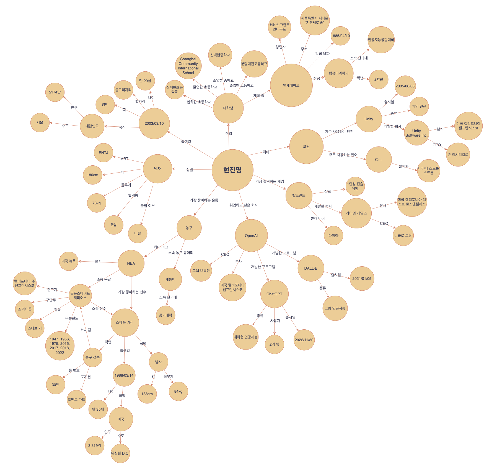

- 자기소개 (KG)
‘나'를 지식 그래프를 통해 소개해보면 다음과 같다.
- 지식그래프 정의 및 소개
지식 그래프는 지식들을 그래프의 형태로 표현하는 방법으로, 서로 관계가 있는 여러 지식들을 일관된 규칙과 정형화된 방식을 통해 노드(node)와 노드 사이의 관계를 나타내는 엣지(edge)로 표현한다. 지식 그래프에서 각각의 노드는 개체(entity)를 표현하는데, 개체는 속성(property)을 갖는다. 개체의 속성을 통해 해당 개체와 다른 개체와의 관계(relation)를 표현할 수 있다. 예를 들어, ‘서울'과 ‘대한민국'이라는 개체이자 노드가 그래프 위에 존재한다고 해보자. 이때 개체 ‘서울'은 ‘수도' 라는 속성을 갖게 되는데, 이 속성을 통해 “‘서울'이라는 개체는 ‘대한민국'이라는 개체의 ‘수도'이다” 라는 관계를 파악할 수 있게 된다. 노드와 엣지로 구성된 그래프는 앞선 예시와 같이 자연스럽게 개체들 사이의 관계를 표현할 수 있고, 시각적으로 관계들을 표현할 수 있으며, 새로운 개체의 추가 및 삭제가 용이하기 때문에 지식을 효율적으로 표현할 수 있다.
지식 그래프는 따로 볼 때는 관계가 없어보이는 지식들의 관계를 직관적으로 구조화시켜 기계로 하여금 주어진 정보를 바탕으로 ‘추론'할 수 있게 만드는 중요한 역할을 한다. 개체들 간의 관계가 명확하게 나타나기 때문에 기계 학습이나 자연어 처리 알고리즘에 자주 사용되는데, 대표적으로 ‘검색 및 관련 내용 표시', ‘사용자 별 추천', ‘자연어 처리', ‘지식 정보 저장' 등의 분야에서 사용된다.
지식 그래프가 사용된 장치에 질문을 하면, 해당 장치는 문장에서 사용된 키워드들의 개체를 자신의 지식 그래프에서 찾고 이를 바탕으로 해당 키워드들이 어떤 관계에 있는지 추론할 수 있다. 결론적으로 해당 장치는 좀 더 복잡한 질문에 대해 정확한 답을 출력할 수 있게 된다. 또한 질문의 내용을 분석하는 과정에서 탐색한 그래프 상의 개체들이 다른 개체들과는 어떻게 연결되어 있는지를 확인해 주어진 질문과 밀접하게 관련되어 있는 질문자가 궁금해할 수 있는 또 다른 주제들을 제시할 수 있게 된다.
지식 그래프를 SNS나 온라인 쇼핑몰의 사용자 한명 한명에 각각 적용시키면 추천 시스템을 구현할 수 있다. 예를 들어, 사용자 A가 친구 추가한 다른 계정의 소유자가 어떤 사람과 그래프 상으로 연결되어 있는지를 파악해 사용자 A에게 다른 친구를 추천을 할 수 있으며, 사용자가 이전에 구매했거나 클릭했던 상품들이 그래프 상으로 다른 어떤 상품들과 연결되어 있는지를 탐색해 사용자가 좋아할만한 상품을 추천할 수 있다.
자연어 처리 모델에 지식 그래프를 결합시키면, 갖고 있는 텍스트 데이터를 그래프의 형태로 표현해 토큰(token)끼리의 관계를 효율적으로 표현할 수 있다. 또한 배경 지식을 모델에 쉽게 적용할 수 있기 때문에 문장의 의미를 더 정확하게 이해하고 추론할 수 있다. 이는 결과적으로 ‘시리'나 ‘클로버'와 같은 음성 인식 가상 비서들의 성능 향상에 도움을 줄 수 있고, ‘ChatGPT’와 같은 언어 모델의 발전에도 도움을 줄 수 있다.
- 국내외 기업의 지식그래프 개발 혹은 적용 사례 조사
‘카카오엔터프라이즈'에는 ‘지식그래프AI’, ‘지식그래프플랫폼파트' 등 지식 그래프를 전문적으로 연구하는 팀이 따로 존재한다. 이들은 지식 그래프 플랫폼을 연구 및 개발해 누구나 지식 그래프를 사용할 수 있도록 ‘공공 지식 그래프'를 만들었고, 기업의 내부 데이터인 재무·인사·구매·판매 등을 지식 그래프화해 사내 지식을 향상시킬 뿐만 아니라, 금융 감독원 전자 공시 시스템의 기업 공시 정보와 국립국어원 ‘우리말샘' 사전 데이터를 기반으로 지식 그래프를 구축했다.
‘삼성SDS’ 역시 ‘카카오엔터프라이즈'와 비슷하게 기업이 보유하고 있는 다양한 지식 문서들에 지식 그래프를 적용했다. 이들은 구축된 지식 그래프를 통해 기업의 지식 문서들을 보다 효율적으로 통합 관리하고, 기업이 보유하고 있는 기술과 사업에 관한 수많은 문서를 검색할 때 단순히 해당 문서 뿐만 아니라 연관된 다양한 정보를 볼 수 있도록 구현했다.
백신을 만드는 기업인 ‘아스트라제네카'는 신약 발굴을 가속화하기 위해 영국 기반의 인공지능 전문기업 BenevolentAI와 제휴를 맺어 질병 병태생리에서 중요한 매커니즘과 새로운 경로를 발견할 수 있는 AI 발굴 플랫폼을 개발하고 있다. 두 회사는 의학 지식들에 지식 그래프를 적용해 인공지능으로 하여금 신약 후보 물질을 빠르게 발견하고, 치료약이 치료할 수 있는 다른 증세나 유발할 수 있는 부작용들을 파악할 수 있도록 플랫폼을 개발하고 있다.
세계적인 투자 은행인 ‘JP Morgan’은 지식 그래프를 활용해 투자 대상 기업의 재무정부를 분석하고 기업의 위험 환경을 측정한다. 또한 고객 정보를 지식 그래프를 통해 표현하고 이를 지속적으로 분석해 사기 행각을 탐지한다.
‘아마존' 역시 자체적으로 지식 그래프를 연구 및 개발하고 있으며, ‘JP Morgan’과 비슷한 방식으로 지식 그래프를 활용해 사기 패턴을 탐지하고 있다. 또한 이들은 앞서 설명했던 것과 같이, 지식 그래프를 고객 개개인에 적용해 광고 타게팅, 개인화, 그리고 분석과 같은 기능들을 구현하고 있다.
위에서 언급한 사례들을 제외하고도 ‘네이버'나 ‘구글'과 같은 많은 기업들이 지식 그래프를 연구 및 개발하거나 다른 기업의 지식 그래프를 큰 금액을 지불하면서 사용하고 있다. 이는 그만큼 지식 그래프를 통해 더 좋은 서비스를 제공할 수 있으며, 중요 문서 및 정보들을 효율적으로 관리할 수 있기 때문이다. 이처럼 대형 기업들이 지식 그래프를 중요시한다는 사실에서 지식 그래프가 현재 굉장히 큰 주목을 받고 있으며, 다양한 방법으로 사용될 수 있다는 사실을 확인할 수 있었다.